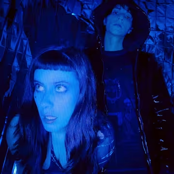

<!DOCTYPE html>
<html lang="es">
<head>
  <meta charset="UTF-8">
  <meta name="viewport" content="width=device-width, initial-scale=1.0">
  <title>MALCRIADA</title>
  <style>
    body {
      margin: 0;
      font-family: Arial, sans-serif;
      background-image: url('pagina_web/bienvenido.jpg');
      background-size: cover;
      background-position: center;
      background-repeat: no-repeat;
      height: 100vh;
      display: flex;
      flex-direction: column;
      justify-content: space-between;
      overflow: hidden;
      transition: background-image 1s ease-in-out;
      color: white;
      -webkit-text-stroke: 1.2px black;
      text-shadow: 0 2px 4px rgba(0,0,0,0.6);
    }

    .navbar {
      display: flex;
      justify-content: center;
      align-items: center;
      padding: 15px;
      position: sticky;
      top: 0;
      z-index: 10;
      backdrop-filter: blur(8px);
      background-color: rgba(255, 255, 255, 0.2);
    }

    .nav-btn {
      width: 140px;
      height: 50px;
      object-fit: cover;
      border-radius: 10px;
      cursor: pointer;
      transition: transform 0.2s, box-shadow 0.2s;
      box-shadow: 0 2px 5px rgba(0,0,0,0.3);
    }

    .nav-btn:hover { transform: scale(1.08); }
    .nav-btn.activo { transform: scale(1.05); }

    .content {
      flex: 1;
      display: flex;
      justify-content: center;
      align-items: center;
      flex-direction: column;
      gap: 20px;
    }

    @keyframes flotar {
      0% { transform: translateY(0); }
      50% { transform: translateY(-10px); }
      100% { transform: translateY(0); }
    }

    .flotante { animation: flotar 4s ease-in-out infinite; }
    .flotante-desfase { animation: flotar 4s ease-in-out infinite; animation-delay: 2s; }
    .logo-bien { width: 600px; max-width: 90%; }

    .content img:not(.logo-bien) {
      width: 280px;
      margin: 10px;
      border-radius: 12px;
      cursor: pointer;
      transition: transform 0.3s;
    }

    .content img:not(.logo-bien):hover { transform: scale(1.08); }

    .info-container {
      display: flex;
      align-items: center;
      justify-content: center;
      gap: 40px;
      flex-wrap: wrap;
    }

    .info-container img { width: 300px; height: auto; }

    .info-texto {
      font-size: 28px;
      color: white;
      font-weight: bold;
      max-width: 500px;
      text-align: left;
      -webkit-text-stroke: 1.2px black;
      text-shadow: 0 2px 4px rgba(0,0,0,0.8);
    }

    h1, p {
      color: white;
      -webkit-text-stroke: 1.5px black;
      text-shadow: 0 3px 6px rgba(0,0,0,0.8);
    }

    .ruido {
      position: fixed;
      top: 0;
      left: 0;
      width: 100%;
      height: 100%;
      pointer-events: none;
      background-repeat: repeat;
      opacity: 0.08;
      z-index: 9999;
      transition: background-image 0.1s linear;
    }
  </style>
</head>
<body>
  <div class="navbar">
    
    <div style="width:100px;"></div>
    
    <div style="width:100px;"></div>
    
    <div style="width:100px;"></div>
    
  </div>
  
  <div class="content" id="contenido">
    
  </div>

  <div class="ruido"></div>

  <script>
    function capitalizar(texto) {
      return texto.charAt(0).toUpperCase() + texto.slice(1);
    }

    function mostrar(seccion) {
      const cont = document.getElementById("contenido");
      const botones = document.querySelectorAll(".nav-btn");
      botones.forEach(b => b.classList.remove("activo"));
      const botonActivo = document.getElementById("btn" + capitalizar(seccion));
      if (botonActivo) botonActivo.classList.add("activo");

      if (seccion === "casa") {
        document.body.style.backgroundImage = "url('pagina_web/bienvenido.jpg')";
        cont.innerHTML = ``;
      } 
      else if (seccion === "info") {
        document.body.style.backgroundImage = "url('pagina_web/fondo2.jpg')";
        cont.innerHTML = `
        <div>
          <h1>¿¡DE QUIÉN QUIERES SABER INFORMACIÓN!?</h1>
          <div>
            
            
          </div>
        </div>`;
      } 
      else if (seccion === "pepe") {
        document.body.style.backgroundImage = "url('pagina_web/fondo5.jpg')";
        cont.innerHTML = `
          <div class="info-container">
            
            <div class="info-texto">
            Peter, personaje de Malcriada.music
              Es tímido, no tiene amigos, su mayor bully es Katy, su compañera. Juntos son vistos en diferentes ocasiones.
            A Peter le gustan los espaguetis y los gatitos. Su música favorita es "It's OK to Cry" ya que siente que realmente necesita llorar más seguido.
            Dato random: Le gusta tocar la guitarra, y siempre se le rompen las cuerdas.
            </div>
          </div>`;
      }
      else if (seccion === "katy") {
        document.body.style.backgroundImage = "url('pagina_web/fondo6.jpg')";
        cont.innerHTML = `
          <div class="info-container">
            
            <div class="info-texto">
            Katy, uno de los personajes de Malcriada.music.<br>
            Es ruda, grosera, su estilo de música favorito es el metal y el punk, su comida favorita son los pastes.
            Su música favorita es "Keroseno", le gusta quemar cosas a veces, es su pasatiempo favorito.
            Dato random: Le regaló un gato a una amiga, y al rato desapareció.
            </div>
          </div>`;
      }
      else if (seccion === "musica") {
        document.body.style.backgroundImage = "url('pagina_web/fondo3.jpg')";
        cont.innerHTML = `
          <div style="text-align:center;">
            <h1>Música</h1>
            <div id="carrusel">
              <button id="anterior">⬅️</button>
              
              <button id="siguiente">➡️</button>
            </div>
            <p id="nombreCancion" style="font-size:25px; cursor:pointer; text-decoration:underline;">Do something!</p>
          </div>`;
        inicializarCarrusel();
      }
      else if (seccion === "redes") {
        document.body.style.backgroundImage = "url('pagina_web/fondo4.jpg')";
        cont.innerHTML = `<div><h1>AQUI AUN FALTA</h1></div>`;
      }
    }

    function inicializarCarrusel() {
      const canciones = [
        { nombre: "Do Something!", portada: "pagina_web/ventana1.png", link: "https://www.youtube.com/watch?v=uPvldhBfwc8" },
        { nombre: "K.O.", portada: "pagina_web/ventana2.png", link: "https://www.youtube.com/watch?v=RSj1tp31x9Y" },
        { nombre: "LoveSong (Cover)", portada: "pagina_web/ventana3.png", link: "https://www.youtube.com/watch?v=p84PLOcepGA" },
        { nombre: "Mision S******", portada: "pagina_web/ventana4.png", link: "https://www.youtube.com/watch?v=J_p6f885Oxg" },
        { nombre: "No Puedo Más!", portada: "pagina_web/ventana5.png", link: "https://www.youtube.com/watch?v=4pVvxO9zneU" },
        { nombre: "No Me Quiero Morir", portada: "pagina_web/ventana6.png", link: "https://www.youtube.com/watch?v=-Wk7CJUSpKg" },
        { nombre: "Momento (Ft Prayers)", portada: "pagina_web/ventana7.png", link: "https://www.youtube.com/watch?v=Kh2twGe8QBU" },
        { nombre: "AAAA", portada: "pagina_web/ventana8.png", link: "https://www.youtube.com/watch?v=rJDH-wszLvs" }
      ];

      let i = 0;
      const portada = document.getElementById("portada");
      const nombre = document.getElementById("nombreCancion");
      const btnSig = document.getElementById("siguiente");
      const btnAnt = document.getElementById("anterior");

      function actualizar() {
        portada.src = canciones[i].portada;
        nombre.textContent = canciones[i].nombre;
      }

      btnSig.onclick = () => { i = (i + 1) % canciones.length; actualizar(); };
      btnAnt.onclick = () => { i = (i - 1 + canciones.length) % canciones.length; actualizar(); };
      nombre.onclick = () => window.open(canciones[i].link, "_blank");
    }

    const imagenesRuido = [
      'pagina_web/ruido.png',
      'pagina_web/ruido2.png',
      'pagina_web/ruido3.png',
      'pagina_web/ruido4.png'
    ];
    const ruidoDiv = document.querySelector('.ruido');
    let ruidoIndex = 0;
    setInterval(() => {
      ruidoDiv.style.backgroundImage = `url('${imagenesRuido[ruidoIndex]}')`;
      ruidoIndex = (ruidoIndex + 1) % imagenesRuido.length;
    }, 100);
  </script>
</body>
</html>
